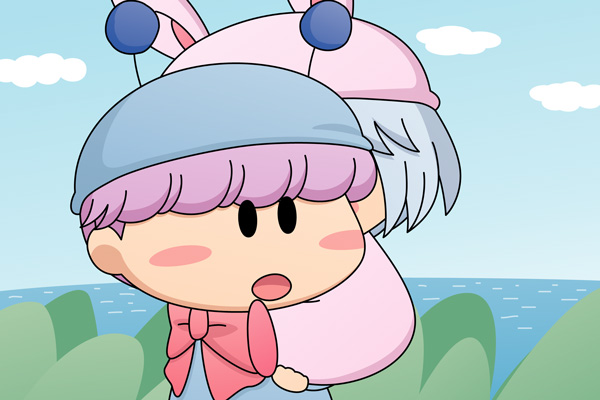

クモモ「これで戸締りは完璧クモ。
皆さん、それでは船着場へ向けて出発するクモよ」
ムルモ「あいでしゅっ」

パピィを背負ったムルモがみんなの後に続くように歩きはじめました。パピィは笑い疲れてしまったのか、ぐっすり眠っているようです。同じようにしてぐっすり眠ったままのアロマをアクミが背負っていました。
ミルモ「くそ～っ、このままだと親父に何て言われるか分からね～ぞ。
早く何とかしないと・・・」
リルム「ミルモ様、正直に全部話した方が良いのでは？」
ミルモ「だからオレは・・・そうだリルム、
今日はリルムん家でオレを一晩かくまってくれ！」
リルム「えっ、・・・はい、わたくしのお部屋でよければ」
パンタ「あ～、ミルモお兄ちゃんずるいですっち。
ボクも連れてってほしいですっち」
ミルモ「ばかやろうっ！こっちは真剣なんだぞ」
リルム「そうですわ、パンタさん」
パンタ「ふぇ・・連れてってくれないとボクたんマルモ国王様に
ミルモお兄ちゃんの居場所を話すですっち」
ミルモ「ひぇ～～っ、頼むからそれだけはやめてくれ～～」
ヤシチ「まったくひどい目に逢ったものだ・・・」
ヤマネ「でも先ほどのヤシチ兄様のご活躍、お見事でございました！」
サスケ「ヤマネの言うとおりだぜ！カッコ良かったぜ！」
ハンゾー「こんなにカッコいい兄貴は初めて見たのら～」
ヤシチ「ハンゾー、それは微妙に褒め言葉になってないぞ」
アクミ「ミルモがあんな性格悪だったとは見損なったな・・」
アロマ（すやすや）
パピィ（すやすや）
ムルモ「それにしてもパピィのやつ重いでしゅね。
キャンディの食べすぎじゃないでしゅかね？
・・・ほえぇぇっ」
突然ムルモは締め付けられるような痛みを感じました。
みんなの乗った船は夕方にラムネ岬へ着き、その後はそれぞれの家へと帰っていきました。ミルモとパンタはリルムの家に泊まります。
久々に屋外のイラストを描きました。そしてパピィも久々の登場です。パピィをおんぶするムルモ・・・妖精の体型的におんぶは無理のような気がしますが、がんばって描いてみました。
『お菓子への招待』もいよいよ次回で最終回です。今回は中休み的なお話でしたが、次回は悔いのないようにしっかり締めたいと思いますのでお楽しみに！
(2009/3/25)